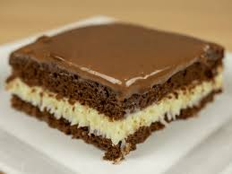

Receita de bolo de prestígio ⭐
Ingredientes
- 3 Ovos 🥚
- 1 xícara (chá) de leite ☕
- 1 xícara (chá) de chocolate em pó ☕
- 1 colher (sopa) de fermento 🥄
- 1/2 xícara (chá) de óleo ☕
- 1 xícara (chá) de açúcar ☕
- 2 xícaras (chá) de farinha de trigo ☕
- coco ralado a gosto 🥥
Calda
- 1 garrafa de leite de coco 🍶
- 3 colheres (sopa) de açúcar 🥄
- 1 xícara (chá) de leite ☕
Recheio
- 1 lata de leite condensado 🥫
- 1 colher (sopa) de margarina 🥄
- 100 g de coco ralado 🥥
Cobertura
- colheres (sopa) de margarina 🥄
- 2 colheres (sopa) de chocolate em pó 🥄
- 8 colheres (sopa) de açúcar 🥄
- 2 xícaras (chá) de leite 🥄

